For Part A, I will primarily be using a beautiful picture of Gyeongbokgung Palace in Seoul, Korea.
The noise is sampled from a Gaussian distribution with the same dimensions as the image. The noisy inputs are then constructed by linearly interpolating between the noise and the image: x_t = (1 − t) × noise + t × image.
Gaussian blur denoises noisy inputs by smoothing neighboring pixels. Higher noise levels generally benefit from stronger smoothing with a larger sigma, at the cost of image detail.
One-step denoising reconstructs the image in a single step by predicting the velocity once at the starting state and extrapolating to t = 1.0. Starting at a smaller t leaves less original image information and results in fewer reconstructed details. However, it is still impressive how well it reconstructs the coarse details.
As expected, the error decreases as t increases. For noisier inputs, the coarse structure of the image is well preserved, while fine details, such as the characters and the tightly spaced roof tile patterns, have higher errors.
At each step, the model predicts the velocity at the current image and time, then uses it to update the image. Starting from t = 0.50 with a step size of 0.02 requires 25 steps to reach t = 1.0. Compared with one-step denoising, details such as the texture of the tree look much better. The result also preserves more detail than Gaussian blur.
Without classifier-free guidance, the images look somewhat realistic but fall into the uncanny valley. These samples are still conditioned on the prompt “a high quality photo.”
However, increasing the CFG weight w strengthens the influence of the conditional velocity relative to the unconditional prediction. In these samples, this produces more realistic-looking images.
Sample 1
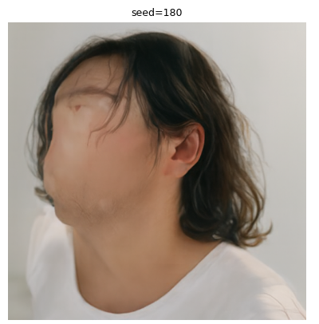
Without CFG
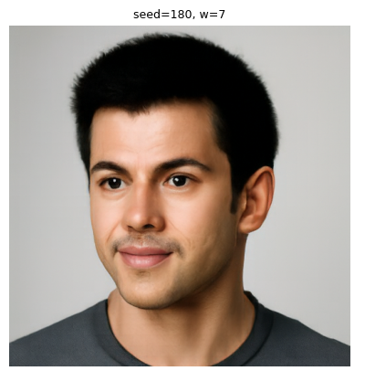
With CFG · w = 7
Sample 2
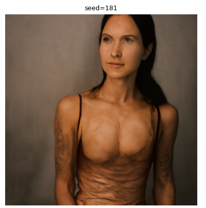
Without CFG
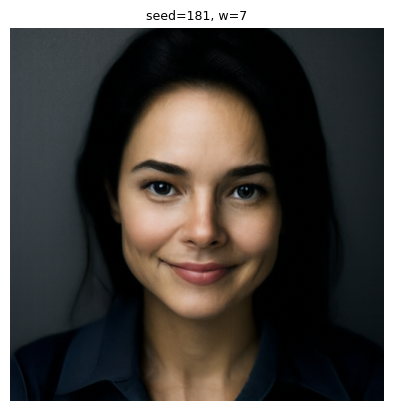
With CFG · w = 7
Sample 3
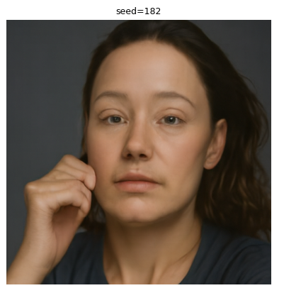
Without CFG
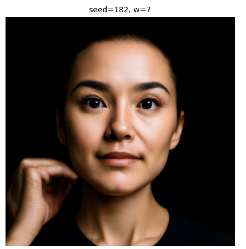
With CFG · w = 7
Sample 4
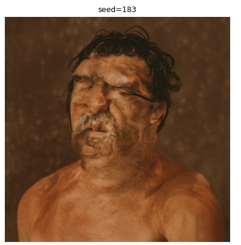
Without CFG
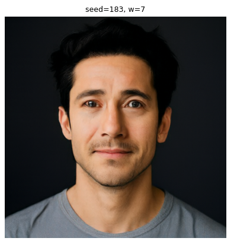
With CFG · w = 7
Sample 5
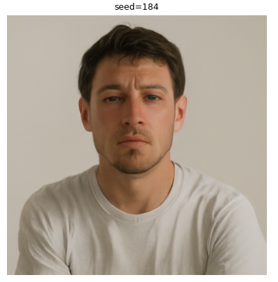
Without CFG
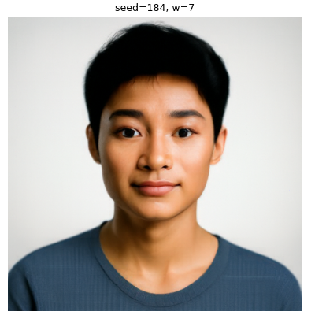
With CFG · w = 7
N
Namwook Lee@namwook_lee · March 1st···
Image-to-Image Editing (3.1)
Campanile
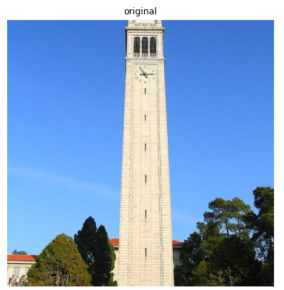
Original
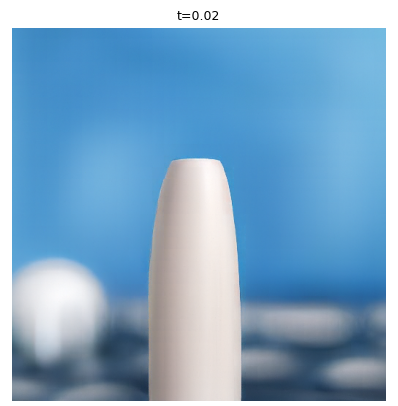
Starting t = 0.02
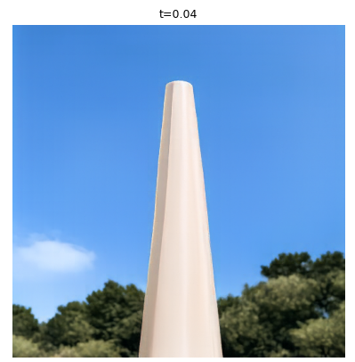
Starting t = 0.04
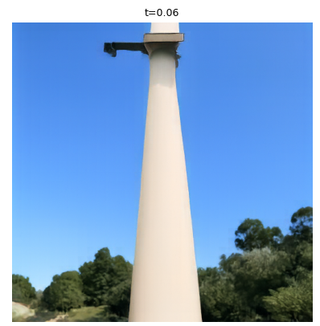
Starting t = 0.06Starting t = 0.10Starting t = 0.14Starting t = 0.25Starting t = 0.50
As the noise level increases, the input becomes closer to pure noise, giving the flow model less information about the original image and more freedom to generate a different scene. As t increases, the final output begins to retain coarse features of the input. At t = 0.04, the palace’s three entrances form three circular objects that look like cups of coffee.
OriginalStarting t = 0.02Starting t = 0.04Starting t = 0.06Starting t = 0.10Starting t = 0.14Starting t = 0.25Starting t = 0.50
The web image is Chiikawa, a Japanese cartoon character. The two drawings are Pikachu (sorry, Pokémon fans) and a stick figure I drew on my iPad. Similarly, at t = 0.02 or 0.04, the outputs often lose the structure of the original drawings. At t = 0.06 and above, the outputs mostly retain a drawing-like appearance, with greater resemblance to the originals as t increases.
Chiikawa · web image
OriginalStarting t = 0.02Starting t = 0.04Starting t = 0.06Starting t = 0.10Starting t = 0.14Starting t = 0.25Starting t = 0.50
At lower t, the starting image is closer to noise, giving the flow model more freedom to follow the prompt, even when it conflicts with the original image. As t increases, more details from the original image are preserved, leaving less room for the denoising process to change the image toward the prompt.
Campanile
Prompt: Big Ben
OriginalStarting t = 0.02Starting t = 0.04Starting t = 0.06Starting t = 0.10Starting t = 0.14Starting t = 0.25Starting t = 0.50
By predicting velocities under two different conditions—one on the intermediate image and the other on its 180-degree rotation—then rotating the second prediction back and averaging the two, we can generate an image that depicts one prompt upright and the other when flipped upside down.
LBJ + Himalayas
Portrait of Lebron James · uprightHimalayas · rotated 180°
We apply the frequency-separation idea from the Gaussian and Laplacian filters used in earlier projects. A high-pass filter emphasizes fine details, while a low-pass filter preserves coarse structure. We combine the high-pass component of the velocity predicted for the close-view prompt with the low-pass component of the velocity predicted for the distant-view prompt. The resulting image aligns with one prompt up close and the other from a distance.
These are the results of a single-step denoiser trained for a noise level of σ = 0.5. From the training loss curve, we can infer that the performance has improved from epoch 1 to epoch 5 (at least on the training distribution), and we can see the results in the denoised samples. Although the results from epoch 1 also look mostly interpretable, the results from epoch 5 have clearer and sharper reconstructed images.
▧Training loss over the full training process · σ = 0.5results/part_B/1_2_1.png
Training loss over the full training process · σ = 0.5
N
Namwook Lee@namwook_lee · January 2nd···
Out-of-Distribution Testing (1.2.2)
Up to σ = 0.6, the model produces decent reconstructions of the digit 7. This noise level is close to σ = 0.5, which the model was trained on. At σ = 0.8 and σ = 1.0, the outputs are harder to interpret, although they still resemble a 7.
This is the result of the pure-noise denoiser. Since the inputs are pure noise independent of the target images, the denoiser is trained to minimize the MSE between its predictions and images from the MNIST distribution, which results in denoised samples that look like a blur of numbers. Also, since the optimal prediction is approximately the average of the digits, the training loss decreases very rapidly, and the results from epochs 1 and 5 do not differ significantly, nor do the results across samples.
Pure-noise samples · epochs 1 and 5
Pure-noise samples · epochs 1 and 5
Pure-noise denoiser · training loss
Pure-noise denoiser · training loss
N
Namwook Lee@namwook_lee · February 2nd···
Training the Time-Conditioned UNet (2.2)
This is the training loss curve for the time-conditioned UNet. Since the early high values dominate the scale, I added the epoch loss, which is the loss averaged across an epoch. We can see a clear downward trend during training.
Time-conditioned UNet · training loss by step
Time-conditioned UNet · training loss by step
Time-conditioned UNet · mean training loss by epoch
Time-conditioned UNet · mean training loss by epoch
N
Namwook Lee@namwook_lee · February 3rd···
Sampling from the Time-Conditioned UNet (2.3)
The results from epoch 1 do not look like numbers at all, while those from epoch 5 contain a few features of numbers but are still ambiguous. Epoch 10 mostly produces samples that correspond to a single number, while a few, like sample 7, are still a bit ambiguous.
Time-conditioned samples · epochs 1, 5, and 10
Time-conditioned samples · epochs 1, 5, and 10
N
Namwook Lee@namwook_lee · February 5th···
Training the Class-Conditioned UNet (2.5)
A training loss curve plot for the class-conditioned UNet.
Class-conditioned UNet · training loss
Class-conditioned UNet · training loss
N
Namwook Lee@namwook_lee · February 6th···
Sampling from the Class-Conditioned UNet (2.6)
This is a comparison of epochs 1, 5, and 10 of the class-conditioned samples and the epoch 10 result of the no-scheduler comparison. At epoch 5, the class-conditioned UNet already produces reliable results compared to the time-conditioned UNet. This is because class conditioning makes the objective clearer while denoising the image. Epochs 5 and 10 both produce near-perfect outputs. This motivated me to try a lower constant learning rate for the no-scheduler option. I changed it to 5e-3, which is half the initial learning rate of the original experiment and which I deemed sufficient, since epoch 5 was already performing well with the scheduler.
Class-conditioned samples · epochs 1, 5, 10, and no-scheduler comparison · four instances per digit
Class-conditioned samples · epochs 1, 5, 10, and no-scheduler comparison · four instances per digit
Class-conditioned UNet · constant-learning-rate training loss
Class-conditioned UNet · constant-learning-rate training loss